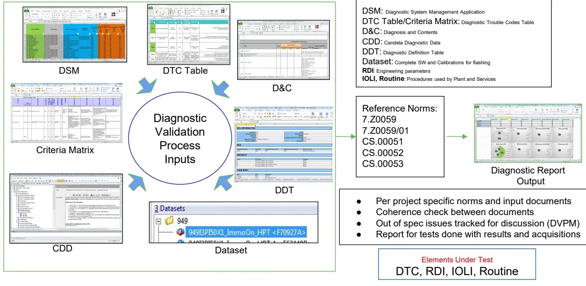
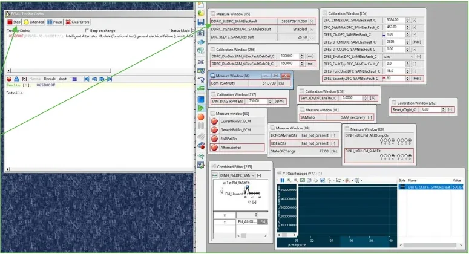
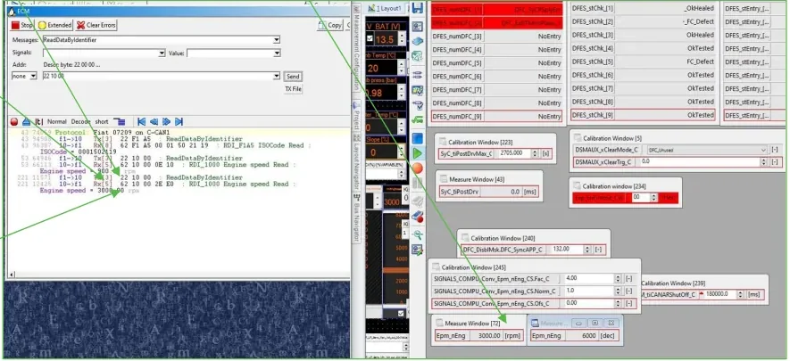

Diagnosis Process Validation¶
Before the software of an electronic control unit (ECU) can be released, its diagnostic content must be checked against the specification — every trouble code, every readable parameter, every tester-activated procedure. This article describes that validation process.
By the end of this article you will be able to:
- explain which specification documents feed diagnostic validation and check them against each other for contradictions;
- set up a fault on a Hardware-in-the-Loop (HIL) bench and walk a trouble code through its complete life cycle, watching the status byte evolve step by step;
- validate the four diagnostic object types — DTCs, IOLIs, Routines and RDIs — with a repeatable procedure;
- document your findings so they can be reproduced, discussed and closed.
The techniques here build directly on the Unified Diagnostic Services (UDS) concepts from Diagnosis (services, sessions, status bytes) and on the measurement/calibration workflow from INCA. Review them first if needed; the remainder of this article is practical.
The validation process at a glance¶
Diagnostic validation is fundamentally a document-driven coherence check. The same diagnostic feature is described in several specification documents written by different teams at different times. Validation proceeds in two phases: verifying that all documents agree with each other, and verifying that the ECU software behaves as written. Most defects found are simple mismatches, and the bench process exists to catch them before release.

The input documents you will work with every day:
| Document | Full name | What it specifies |
|---|---|---|
| DSM | Diagnostic System Management application | The project-level diagnostic database |
| DTC Table / Criteria Matrix | Diagnostic Trouble Codes Table | Every DTC with its maturation criteria, MIL class and healing conditions |
| D&C | Diagnosis and Contents | What the ECU must offer: sessions, services, RDIs, IOLIs, routines |
| CDD | Candela Diagnostic Data | The machine-readable diagnostic description used to configure the testers |
| DDT | Diagnostic Definition Table | Detailed definition of diagnostic data and conversion formulas |
| Dataset | — | The complete software + calibration package flashed on the ECU under test |
The elements under test are the four diagnostic object types: DTC (Diagnostic Trouble Code — a stored fault), RDI (engineering parameters, read and written by data identifier), IOLI (Input/Output Line Interface procedures) and Routine (tester-activated procedures used by the plant and by service, e.g. actuator tests and resets of learned values).
The applicable reference norms for the project are 7.Z0059, 7.Z0059/01, CS.00051, CS.00052 and CS.00053 — they define the general diagnostic behavior (status byte evolution, error memory management, timing) that every DTC must follow.
The single output of the process is the Diagnostic Report: which tests were run, their results, and the names of the acquisitions that prove them. Anything found out of spec is tracked for discussion in the DVPM meeting and opened as a point in the OPL (Open Points List) management system.
flowchart LR
subgraph Inputs["Input documents"]
DSM["DSM"]
CM["DTC Table / Criteria Matrix"]
DC["D&C"]
CDD["CDD / DDT"]
DS["Dataset"]
end
subgraph Bench["HIL test bench"]
CHK["Coherence checks<br/>between documents"]
TEST["Manual tests +<br/>automated VST runs"]
end
REP["Diagnostic Report"]
OPL["OPL point per issue<br/>(tracked in DVPM)"]
Inputs --> CHK --> TEST --> REP
TEST -->|out of spec| OPLThe test environment¶
Validation tests run on a HIL bench equipped with the real ECUs — typically the ECM (engine control module), HCP (hybrid control processor) and TCM (transmission control module) — plus their real actuators. Faults and maneuvers are reproduced in the different vehicle conditions the specification requires:
- Power On — key on, engine off,
- Cranking,
- Engine Running / Propulsion active,
- Vehicle Running.
Four tools are used in combination, each for its own role:
| Tool | Role in diagnostic validation |
|---|---|
| ControlDesk | Drives the HIL bench and simulates vehicle conditions |
| INCA | Measures and calibrates internal ECU signals; used to force fault conditions and to read internal values for comparison |
| DIAnalyzer | The diagnostic tester: sends UDS requests, reads the error memory, checks status bytes and snapshots |
| CDA | Diagnostic data environment (per project specification) |
New diagnostic tests are always executed manually first; the maneuvers that work are collected and shared so they can be automated in the VST test platform, which then re-runs the already-automated diagnosis cases. The two modes complement each other: manual exploration, then regression automation.
Checks common to every element¶
Whatever the element type, three families of checks always apply:
- Coherence between documents. The element must exist with the same definition in the D&C, in the CDD/DDT and (for DTCs) in the Criteria Matrix. Every diagnostic session listed in the D&C must also be active in the CDD, with matching descriptions.
- Enabling and healing conditions. Each condition is removed one at a time and the effect on the element's behavior is observed — a condition that has no effect when removed is a specification or software error.
- Sessions and addressing. Requests are sent in all diagnostic sessions
and with both physical addressing (one specific ECU answers,
Addr = nonein the tester) and functional addressing (the request is broadcast,Addr = ALL, and every ECU that supports the service answers). In functional addressing, if no ECU answers at all, the tester reports an Rx Timeout — that's expected, not a tool failure.
Positive and negative responses are equally important
A diagnostic feature is not validated when it works — it is validated when it works and fails the way the CDD says it should. Every negative response code listed in the CDD must be provoked and checked. Limiting tests to the positive cases is a common source of incomplete coverage.
DTC validation¶
Collecting the DTC's details¶
For each Diagnostic Trouble Code, the Criteria Matrix (checked against the DSM and the DDT for coherence) provides the full test plan:
- the MIL class — whether this fault must light the malfunction indicator lamp (MIL, the dashboard "check engine" light) or not;
- the maturation time — how long the fault condition must persist before the DTC is stored — and the de-maturation time;
- the enabling conditions (when the monitor is allowed to run) and the healing conditions (how the DTC returns to a clean state).
Two project rules are checked before any bench work, since they catch setup problems that would otherwise make a test fail for reasons unrelated to the diagnostic implementation:
- every RDI referenced by the Criteria Matrix must actually be active in the dataset flashed on the ECU;
- the MIL status of the DTC must be identical across all documents.
A worked example: P065B¶
As a concrete example, consider DTC P065B — "Intelligent Alternator Module
(functional test) general electrical failure (circuit short to battery or
open)", internally the DFC (Diagnostic Fault Code) DFC_SAMElecFault. The
maturation criterion is that the signal IAM_ECM_FEEDBACK.ElectricalFault
equals 1, and the DTC Table requires the warning indicator to stay OFF for
this fault.
You simulate the fault while the engine is running (forcing the internal
signal in INCA), and after the maturation time elapses the DTC is stored in
the error memory with status byte 8F.

In this particular test the MIL actually turned ON — contradicting the DTC Table. The mismatch is reported as a finding: an OPL point is opened asking for clarification, and no calibration is changed, in line with the approval rule below.
Approval rule
For final approval, the maneuvers must simulate all input conditions (every combination that enables the monitor), but they must not change the diagnosis boundary conditions — you validate the diagnostic as calibrated, you do not recalibrate it to make it pass.
Following the status byte across key cycles¶
Most of a DTC test is a walk through key on/off cycles, checking that the DTC status byte (ISO 14229) evolves as the norms require. This sequence is the core of the DTC test procedure. The relevant bits:
| Bit | Meaning |
|---|---|
0 (01) |
testFailed — fault present right now |
1 (02) |
testFailedThisOperationCycle |
2 (04) |
pendingDTC |
3 (08) |
confirmedDTC — stored in error memory |
6 (40) |
testNotCompletedThisOperationCycle |
7 (80) |
warningIndicatorRequested |
The validation sequence for one DTC looks like this:
| Step | Action | Expected status byte | Why |
|---|---|---|---|
| 1 | Set the fault (engine running), wait maturation time | 8F |
Fault tested, failed, pending and confirmed; warning bit set |
| 2 | Key off, wait the power latch time until the ECM really shuts down; key on | CD if the monitor cannot run in key on, 8F if it can and the fault is still present |
Depends on the DTC's enabling conditions |
| 3 | Heal the fault per the DTC Table (fault was already confirmed) | 8E |
Fault no longer present, but still failed this cycle |
| 4 | Key off, wait power latch, key on | 8C |
Healing conditions met, fault not present in this new cycle |
| 5 | Key off without waiting for power latch, key on | C8 |
Monitor not yet completed in this cycle |
| 6 | Engine running | 88 |
Only confirmed + warning bits remain |
| 7 | Next monitoring cycle | 88 again, then 08 |
The pending/test-failed bits are cleared cycle by cycle until only the confirmed bit survives |
stateDiagram-v2
direction LR
s8F: "8F fault matures"
s8E: "8E healed, same cycle"
s8C: "8C new cycle, healing met"
sC8: "C8 monitor not completed yet"
s88: "88 clean cycle"
s08: "08 only confirmedDTC left"
s8F --> s8E: "healing conditions met"
s8E --> s8C: "key off (wait PL) + key on"
s8C --> sC8: "key off (no PL wait) + key on"
s8C --> s88: "engine running"
sC8 --> s88: "engine running"
s88 --> s08: "next monitoring cycle"Two practical rules from the bench:
- Alternate waiting and not waiting for the power latch time between key cycles — this covers more software initialization paths and exposes DTCs that behave differently depending on whether the ECU fully shut down.
- DTC storage must always follow the status byte evolution required by the project norms; any jump or missing step is an OPL point.
Checking snapshots with service $19¶
When a DTC is stored, the ECU also freezes a snapshot (freeze frame) of
environmental parameters, recording the vehicle state at the moment of failure. You verify it with UDS service 0x19 subfunction 0x04
(reportDTCSnapshotRecordByDTCNumber). For P065B, whose 3-byte DTC number is
06 5B 00:
19 04 06 5B 00 00 → snapshot record 0 must be POPULATED (first storage)
19 04 06 5B 00 01 → snapshot record 1 must be VOID (never stored twice yet)
Rules checked:
- on the first storage there must be exactly one snapshot — a second record while the fault was never healed and never re-detected is an error;
- after healing the fault, re-setting it and cycling the key, a second snapshot must appear — and its content must be checked for coherence too;
- the environmental parameters in the snapshot must match the same parameters read live in INCA, and must not contain unknown RDIs.
Also verify that the expected recoveries work (the healing path in the DTC Table) and that unwanted recoveries are not active (the DTC must not clear itself through a path the specification does not allow).
IOLI and Routine validation¶
IOLIs and Routines are tester-activated procedures — actuator commands, resets of learned values, self-tests. They share one procedure, with a few routine-specific steps.
For both element types:
- Coherence: the D&C and the CDD/DDT must list the same sessions, the same descriptions and the same positive/negative responses.
- Enabling conditions: check all of them, then remove them one by one and verify the request is now refused with the expected negative response.
- All sessions, both addressing types: start the IOLI/routine in every diagnostic session, in physical and in functional addressing, in Power On and Engine Running conditions; report any unexpected positive or negative answer. As a general rule Engine Running is excluded by all IOLIs — check the CDD for the specific vehicle conditions each one requires.
- Effect on the actuator: a positive response must produce exactly the behavior the CDD promises — the actuator is really commanded, or (for reset IOLIs) the internal measuring points are zeroed and the adaptive learning parameters are reset.
- Execution/activation time must respect the CDD and the norms.
Routine-specific checks:
- exercise the full command sequence — Start / Stop / Result request — and verify each step's response;
- check that the routine correctly inhibits the DTCs that would otherwise be set by its own artificial conditions (a routine that stores trouble codes while running is a defect).
RDI validation¶
RDIs (the engineering parameters read via ReadDataByIdentifier) are validated
for content, access and conversion.
- Measuring points: the RDIs listed in the D&C and CDD must exist and be readable; prepare an acquisition with all measuring points of the element under test.
- Environmental conditions: run the maneuvers needed to exercise the RDI across its range.
- Access rules: read and write the RDI in all diagnostic sessions and in both addressing types; every enabling condition for reading/writing is checked and then removed to provoke the documented negative responses.
- Conversion formulas are checked by setting and unsetting values and comparing the tester against the ECU's internal representation.
The two conversion formulas¶
There are two distinct conversions, and they must not be confused with each other.
The ECU-internal formula (from the software manual) converts between the internal integer and the physical value as the software sees it:
phys = fac_sw × int + offset_sw
900 rpm = 0.50 × 1800 + 0
The D&C conversion formula is what the diagnostic tester uses to turn the hexadecimal response into the physical value it displays. It is not the internal representation of the RDI:
Phys = (FAC × DEC) / DEN + OFS
HEX value = 2E E0 → DEC value = 12000
FAC = 1, DEN = 4, OFS = 0
3000 rpm = (1 × 12000) / 4 + 0

Coverage rules:
- for linear RDIs, check at least 3 measuring values spread across the range (the formula must hold at every point, not just at the ends);
- for encoded/bit-mapped RDIs, check every bit individually — perform the maneuvers that set and unset each bit;
- for non-linear RDIs, perform all maneuvers needed to fully exercise every region of the characteristic.
Reporting and issue management¶
All test activity must be documented. For each experiment:
- Save the acquisitions from every tool, using one consistent base name —
the convention used in the project is
<DFC>_<DTC>_<Dataset>_<Date>, for example: - INCA:
DFC_APPPlausBrk_P2299_520AMBI50x1_20200910.dat - DIAnalyzer:
DFC_APPPlausBrk_P2299_520AMBI50x1_20200910.log - Create a DCM file with all the calibrations used during the experiment, so the result is reproducible.
- Write the results and the acquisition names into the diagnostic report file.
- Open an OPL point for every issue found and notify the OPL mailing list.
The e-mail object convention is
SoftwareLineProject_DVPM_<version>_<family>_<dataset>_#<point number>: short description, e.g.P1619_DVPM_2.1_FamB_E6dFinal_520AMBI52X1_#1272: Speed Limiter - 2 key cycle ISSUE.
One issue, one OPL point
Never mix several issues into a single OPL item — each finding must be tracked, discussed at the DVPM and closed individually.
Key takeaways
- Diagnostic validation is a coherence exercise: DSM, DTC Table/Criteria Matrix, D&C, CDD/DDT and the dataset must all agree — and then the ECU must behave as written.
- Tests run on the HIL bench (real ECM/HCP/TCM + actuators) with ControlDesk, INCA, DIAnalyzer and CDA, across all vehicle conditions; proven maneuvers are automated in VST.
- DTC testing covers maturation, MIL class, enabling/healing conditions,
and a disciplined key-cycle walk through the status byte (
8F → 8E → 8C → C8 → 88 → 08), with snapshot checks via19 04 <DTC> <record>. - IOLIs and Routines are checked in every session and both addressing types, for positive and negative responses, actuator effect, parameter zeroing and execution time.
- RDIs require both conversion formulas: the ECU-internal one
(
phys = fac_sw × int + offset_sw) and the D&C tester one (Phys = (FAC × DEC)/DEN + OFS) — 3 points for linear RDIs, every bit for encoded ones. - Every experiment produces named acquisitions + a DCM; every issue gets its own OPL point.
Where this leads
The fault-finding approach and the error-memory mechanics covered here are applied to real vehicle problems in Troubleshooting and First Level Analysis.
Source material¶
This article was distilled from the academy lesson materials:
- Diagnosis Process — PDF, 4.4 MB